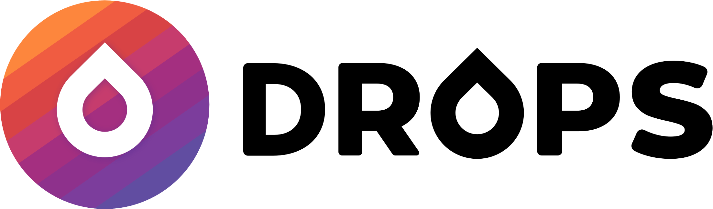

ABOUT THE PROJECT
Vocapp is a vocabulary learning app designed for the student project for Intro to UX Course at Career Foundry. Goal of the project was to learn fundamental principles of UX design and experience the Design Thinking Process.
My role and responsibilities
This was an introduction course for 1 month (Sep. 2019-Oct. 2019).
My role was to sketch possible solutions to vocabulary learning problems for early testing by applying Design thinking process from competitive analysis to user research and usability test.
DESIGN PROCESS

COMPETITIVE ANALYSIS
My goal was to understand how other learning apps solve user problems and what features they have. I analyzed 3 competitor apps that I also used before. I analyzed what they’re doing good and what could be improved.

- 

Key Insights
Main insight was that most known vocabulary/language learning apps offer different type of exercises, audio support, voice recognition and interaction to enable users easily learn and memorize words and phrases.
USER RESEARCH
I conducted user research by interviewing 3 participants who experienced a vocabulary or language learning apps before in order to understand their thoughts, desires and needs.
Key Insights
Main insights were;
- They use vocabulary learning apps to exercise for a limited time.
- They want to be able to hear pronunciation.
- Repeating and using words in context is a good way to learn and memorize.
- They want to be notified for daily exercises by setting a reminder
USER PERSONA
Based on the outputs of user interviews, I created a proto-persona, Florentine.
Florentine needs;
- to be able to study during her commute or lunch break
- to be reminded to start exercising at this time of the day
- to repeat words to memorize because she has difficulty in keeping words in her mind
FLOWS
As a next step I created two user flows to map out the navigation to achieve two main tasks.
1. Learning a new vocabulary by completing a category

2. Set a reminder for daily exercises

WIREFRAMING & PROTOTYPING
Next step was visualizing my solutions by sketching with crazy8 method for the main 2 tasks.
1. Learning a new vocabulary by completing a category

2. Set a reminder for daily exercises

TEST
I conducted and early usability test to see if my initial solutions work and observe how users interact with my prototype. Early testing with paper sketches allowed me to determine what needs to be changed and because I didn’t commit too much time for wireframing, it was easy to improve my sketches and then begin creating wireframes.
Issues
- Users want to be able see where they are and how many steps left to finish current exercise.
- Two of the icons in bottom navigation were obvious (settings an my profile) but categories and progress icons were now clear to users.
- Users needed a way to quit exercise to be able to learn another category.
- All users wanted to be able to set a reminder in fewer steps.
- They wanted to be able to access daily exercise easily via bottom navigation bar.
- Before saving the reminder they wanted to be able to review it.
Improvements

- Added label to categories (main) screen to display selected language and level.
- Settings icon in bottom navigation bar was replaced with Daily Exercise icon to allow users access reminders easily because Daily Exercises the most important feature after exercising. Added labels for icons to make it more understandable.
- Setting icon moved to top right corner to keep top navigation bar clean and easy to tap.
- Added progress count to enable users see their progress and remaining word count.
- Added quit button to allow users save their progress and quit.
Steps for setting a new reminder gathered in one screen to enable users determine their settings easily.
CONCLUSION
This project helped me to have an understanding of UX principles, discover Design Thinking Process and apply core UX skills.
Identifying problems and thinking about possible solutions without diving into learning tools and focusing user interface at this step enabled me to understand user-centered approach.